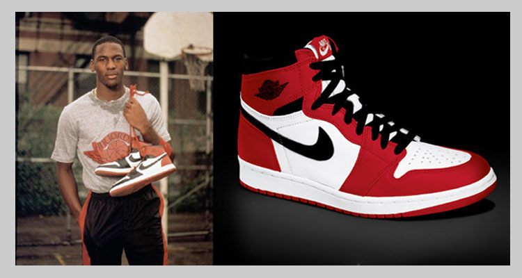

Como comenzo la cultura?
En los tiempos que corren cada vez apostamos más por el confort a la hora de escoger el calzado que utilizamos. Es por este motivo que las zapatillas deportivas o sneakers están cada vez más en boga. Las deportivas tienen su origen en 1870 cuando se crearon las zapatillas llamadas Plimsoll. La característica principal de estas deportivas es que tenían una línea de color a lo largo de toda la suela. Esta línea de color se asemejaba a la línea de flotación de los barcos (Plimsoll), de aquí su nombre. A día de hoy, este tipo de zapatillas se denominan de tipo casco, y son uno de los grupos de deportivos más amplio. Las zapatillas Plimsoll eran utilizadas por la gente que se iba de vacaciones pero pronto empezaron a utilizarlas también deportistas como los jugadores de tennis o croquet. De la misma manera, las zapatillas de deporte empezaron a utilizarse para el ocio y para hacer actividades al aire libre. En 1895 la compañía británica Foster diseñó un tipo de deportivas de velocidad provistas de clavos en la parte inferior. Estas zapatillas fueron muy utilizadas por los atletas y de hecho se ganaron muchas competiciones con ellas. Desde los años 50 a los 70 comenzaron a utilizarse mucho por los estudiantes británicos en las clases de educación física. A comienzos del S.XX comenzaron a utilizarse en América las primeras zapatillas con suela de goma que recibían el nombre de sneakers. Las primeras zapatillas de goma fueron diseñadas por spalding en el año 1907. El mercado de las sneakers creció mucho cuando los jugadores de baloncesto empezaron a patrocinar las zapatillas y los jóvenes hacían cola para conseguir un par de deportivas. Durante los años 50 los códigos de vestimenta se relajaron y los niños empezaron a utilizar las zapatillas en el día a día sustituyendo al zapato de cuero convencional, de tal manera que la venta de este último se vio muy afectada. Pero fue durante los años 90 cuando las compañías de sneakers empezaron a hacer mucho hincapié en el marketing como forma de vender su producto. Las deportivas se volvieron un producto de moda, más allá de su uso atlético. A día de hoy las zapatillas deportivas son consideradas como un artículo de moda el cual tenemos muy en cuenta a la hora de complementar nuestros outfits. De hecho, son de vital importancia a la hora de combinarlos con looks más sofisticados para darles un aire más relajado.